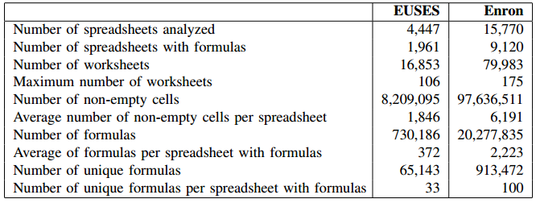
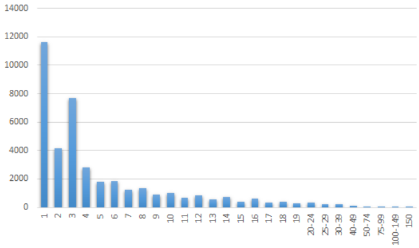
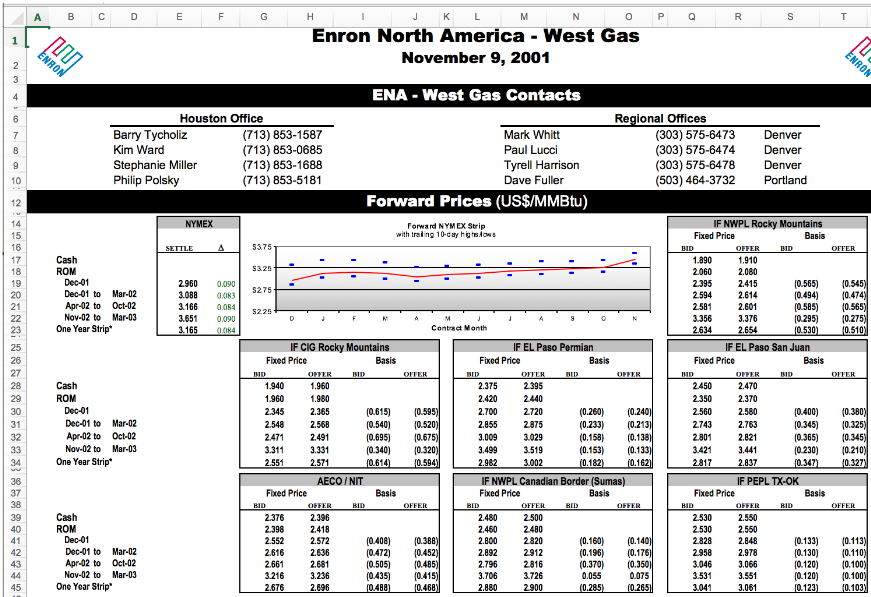
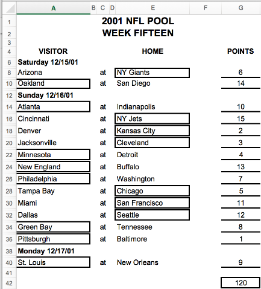
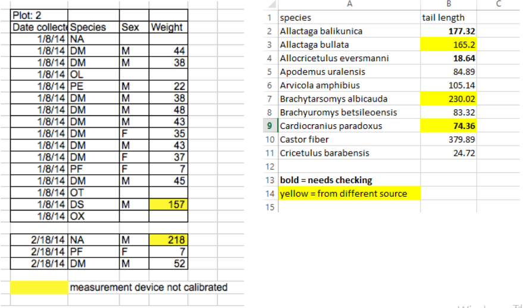
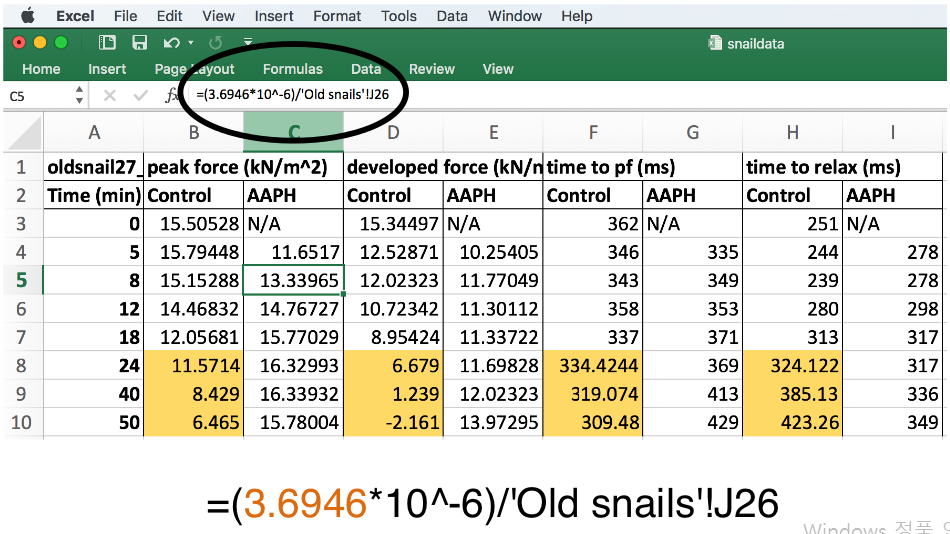
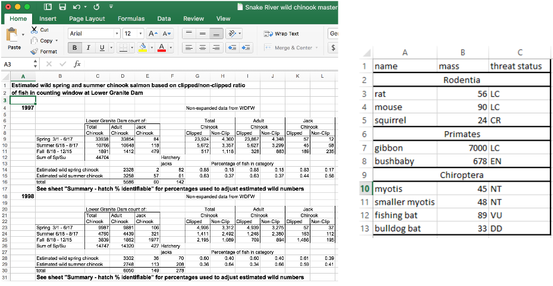

데이터 과학
탈옥(jailbreakr) – 엑셀에서 탈출… 자유
학습 목표
- 스프레드쉬트에 대한 대중성을 확인한다.
- 스프레드쉬트와 R을 비교한다.
- 엔론 사례를 통해 스프레드쉬트 현황에 대해 이해한다.
탈옥 1
엑셀로 대표되는 스프레드쉬트는 가장 많은 사람들이 사용하는 데이터 분석 및 숫자형 데이터 처리를 위해 사용하는 도구다. 사실 애플 컴퓨터가 대중화 되는데 있어 가장 많은 기여를 한 것도 비지캘크(VisiCalc) 라는 스프레드쉬트다. 전세계적으로 R 사용자는 백만명이 되지 않을 것으로 추산된다.
| 데이터 분석 도구 | 사용자 수 |
|---|---|
| 마이크로소프트 오피스 | 10 억명 |
| 스프레드쉬트(엑셀) | 6억 5천만명 |
| 수식(formulas) 사용 | 50% ↑ |
| 파이썬 | 백만 ~ 오백만명 |
| R | 25만 ~ 백만명 |
엑셀 코퍼스 2
엑셀 코퍼스 저장소
- EUSES corpus: 4,447 스프레드쉬트 (16,853 워크쉬트)
- A modern day Pompeii - Spreadsheets at Enron: 15,770 스프레드쉬트 (79,983 워크쉬트)

엔론 엑셀 코퍼스 분석 결과
- 24% 엔론 스프레드쉬트 수식에 엑셀 오류가 있음
- 스프레드쉬트에 사용되는 함수 : 핵심 함수 15 개가 76% 스프레드쉬트에 사용됨
- 매일 스프레드쉬트 100개가 전자우편에 첨부되어 유통
- 전자우편을 통해 스프레드쉬트가 10% 전자우편이 첨부되거나 주제로 전달됨.
| 순위 | 함수 | 스프레드쉬트 갯수 | 누적 백분율(%) |
|---|---|---|---|
| 1 | SUM | 578 | 6.4% |
| 2 | + | 1259 | 14.0% |
| 3 | - | 2262 | 25.1% |
| 4 | / | 2625 | 29.1% |
| 5 | * | 3959 | 43.9% |
| 6 | IF | 4260 | 47.3% |
| 7 | NOW | 5322 | 59.1% |
| 8 | AVERAGE | 5664 | 62.8% |
| 9 | VLOOKUP | 5733 | 63.6% |
| 10 | ROUND | 5990 | 66.5% |
| 11 | TODAY | 6182 | 68.6% |
| 12 | SUBTOTAL | 6480 | 71.9% |
| 13 | MONTH | 6520 | 72.3% |
| 14 | CELL | 6774 | 75.2% |
| 15 | YEAR | 6812 | 75.6% |
스프레드쉬트 내 워크쉬트 갯수 분포

스프레드쉬트 활용 사례
1. 대쉬보드 사례

2. 스포츠 토토

3. 데이터 서식

4. 수식(formulas)

5. 병합(merge)

스프레드쉬트 이해하기
데이터 분석을 위해서 컴퓨터도 읽을 수 있고, 사람도 읽을 수 있는 프로그램이 다수 존재한다. 컴퓨터 프로그램을 열어보면 컴퓨터가 무시하고 넘어어 가지만 사람이 더 관심을 갖는 주석과 실제 컴퓨터가 실행하는 코드로 구성된다. 따라서 컴퓨터도 읽을 수 있고, 사람도 읽을 수 있는 코드가 데이터 과학을 위해 필요하다.
코드 도 사람과 컴퓨터 모두에게 가독성을 제공해야 하지만, 데이터 도 사람과 컴퓨터 모두에게 가독성을 제공해야만 된다. 문제는 스프레드쉬트 가 사람과 컴퓨터 모두에게 가독성을 제공하지 않는데 있다. 어쩌면 가장 복잡성이 높은 것이 스프레드쉬트라고도 볼 수 있다. 처음에는 쉽게 다가오지만, 1주일만 지나도 해독하기가 만만치 않는 경험을 종종 했을 것이다.
스프레드쉬트는 데이터, 서식, 수식으로 구성된다. 숫자 데이터를 엑셀로 가져오게 되면 엑셀 내장 함수를 통해 수식 계산을 수행하고, 엑셀 사용자 본인 혹은 외부 사람을 위해 서식을 입히는 과정을 거쳐 비로소 완성된 스프레드쉬트가 된다.

스프레드쉬트와 R을 비교해 보면, 서로 상응하는 기능이 일대일로 대응되는 것을 확인할 수 있다.
| 스프레드쉬트 | R |
|---|---|
| * 데이터 | * 데이터 |
| * 로직 | * .R, .Rmd |
| * 그림 | * .png, .svg |
| * 서식을 갖춘 표 | * .md, .html, .pdf, Shiny 앱 |
| * 반응성(reactivity) | * 빌드와 배포 |
이런 스프레드쉬트 문제점을 극복하기 위해서 다양한 시도가 진행되고 있다.